Internationalisation selon Opquast V5
Présentation - Internationalisation selon Opquast V5
Slide 1 sur 15 - Internationalisation
Slide 1 - Internationalisation
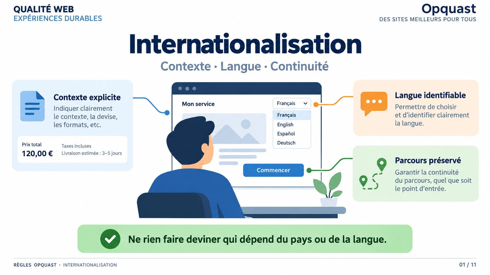
Lecture du visuel
La slide introduit la thématique Internationalisation autour de trois axes pédagogiques : Contexte, Langue, Continuité.
Au centre, une personne consulte un service multilingue. Trois zones structurent la lecture :
- Contexte explicite : le visuel montre des informations qui ne doivent pas être laissées à deviner selon le pays ou les conventions locales.
- Langue identifiable : l’interface permet d’identifier clairement la langue utilisée ou proposée.
- Parcours préservé : le changement de langue ne doit pas faire perdre le contexte de navigation.
Idée directrice
Internationaliser un service ne consiste pas seulement à traduire des textes. Il faut aussi rendre explicites les conventions locales, permettre aux personnes et aux outils d’identifier la langue et préserver la continuité du parcours.
Point de vigilance Opquast
Les exemples de devise ou de formats visibles dans le bloc « Contexte explicite » illustrent l’internationalisation au sens large. Ils ne correspondent pas, à eux seuls, à des règles de la rubrique 128 à 135.
Les axes Contexte · Langue · Continuité constituent un regroupement pédagogique, pas une classification officielle Opquast.
Message à retenir
Ne rien faire deviner qui dépend du pays ou de la langue.
Internationaliser un service, ce n’est pas simplement traduire une page. L’utilisateur peut arriver depuis un autre pays, utiliser une autre langue ou ne pas partager les conventions que nous considérons comme évidentes.
Cette première slide pose donc trois questions : est-ce que le contexte est explicite ? Est-ce que la langue est identifiable ? Est-ce que le parcours reste cohérent lorsqu’on change de langue ?
Relier les règles à leur impact
Si ces questions ne sont pas traitées, l’utilisateur peut devoir deviner un indicatif ou un pays, arriver par surprise sur une langue qu’il ne comprend pas, entendre une mauvaise prononciation avec une synthèse vocale ou devoir recommencer sa navigation après un changement de langue.
Ce que garantissent les règles
Les règles de la rubrique 128 à 135 visent à rendre les informations internationales plus explicites, à permettre aux personnes et aux outils d’identifier correctement les langues et à faciliter l’accès à la version linguistique pertinente sans rupture inutile du parcours.
Mémo oral
Contexte. Langue. Continuité.
Slide 2 - Commencer par le préjudice utilisateur
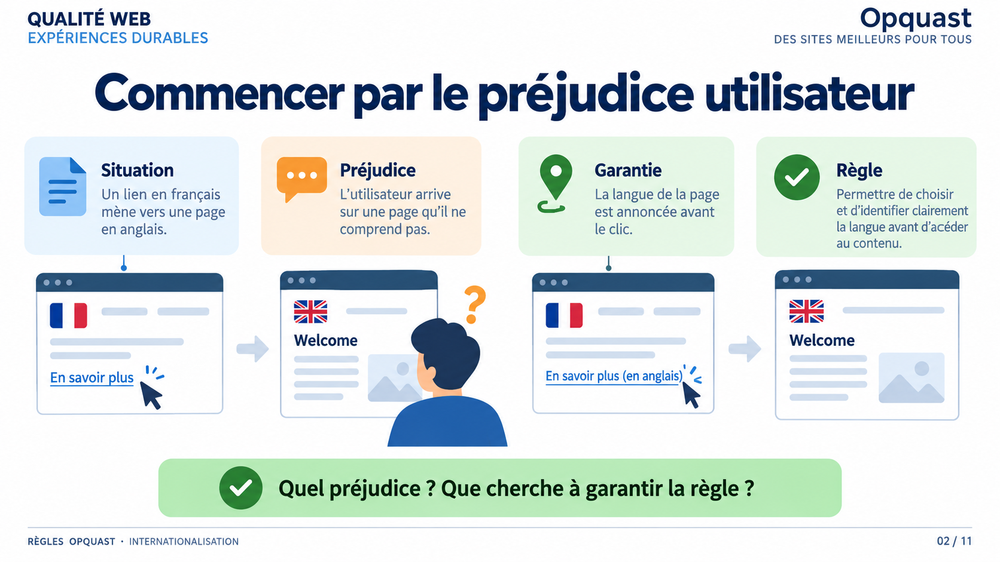
Lecture du visuel
La slide présente une méthode en quatre temps :
- Situation
- Préjudice
- Garantie
- Règle
L’exemple part d’un lien en français qui mène vers une page en anglais. Le changement de langue surprend l’utilisateur. La version améliorée annonce la langue avant le clic.
Idée directrice
Le numéro de règle vient après la compréhension du problème utilisateur.
Point de vigilance Opquast
Les drapeaux éventuellement représentés dans le visuel sont seulement illustratifs. Opquast n’impose pas l’usage d’un drapeau pour signaler une langue.
Message à retenir
Quel préjudice ? Que cherche à garantir la règle ?
Pour comprendre les règles d’internationalisation, évitons de commencer par les numéros. Partons d’une situation très simple : je clique sur un lien en français et j’arrive sans avertissement sur une page en anglais.
Le problème n’est pas seulement « la page est en anglais ». Le problème est que je n’avais aucun moyen de l’anticiper.
Relier chaque règle à son impact
Pour chaque règle du module, posons la même question : qu’est-ce que l’utilisateur risque de subir si l’information de langue, de contexte ou de destination n’est pas donnée au bon moment ?
Il peut cliquer inutilement, mal interpréter une information, perdre le fil du parcours ou ne pas pouvoir exploiter correctement le contenu.
Ce que garantit la règle
La règle pertinente cherche alors à supprimer cette incertitude : informer avant l’action, permettre une interprétation correcte ou maintenir la continuité du parcours.
Mémo oral
Préjudice → garantie → règle.
Slide 3 - Ne pas faire deviner le contexte local
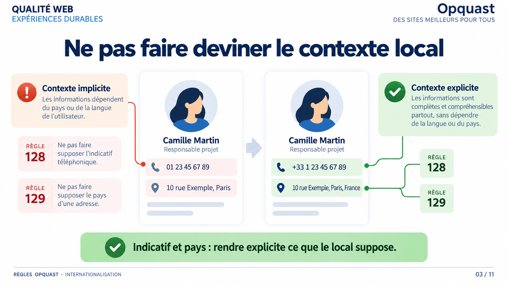
Lecture du visuel
Deux fiches de contact sont comparées.
À gauche, le contexte reste implicite :
01 23 45 67 8910 rue Exemple, Paris
À droite, les informations sont explicitées :
+33 1 23 45 67 8910 rue Exemple, Paris, France
Règle 128
« L'indicatif international est disponible pour tous les numéros de téléphone. »
Règle 129
« Le pays est précisé pour toutes les adresses postales. »
Vérification
Pour les numéros : vérifier que l’indicatif international nécessaire est disponible. Il peut notamment être indiqué directement avec chaque numéro.
Pour les adresses : vérifier que le pays est écrit explicitement, sans demander à l’utilisateur de le déduire de la ville, du code postal ou du téléphone.
Point de vigilance Opquast
« Disponible » ne signifie pas nécessairement que l’indicatif doit être répété devant chaque numéro.
Cas A, indicatif directement dans le numéro :
- Téléphone :
+33 1 23 45 67 89
C’est la solution la plus immédiate pour l’utilisateur.
Cas B, indicatif fourni globalement :
- France : indicatif international
+33 - Téléphone :
01 23 45 67 89 - Assistance :
01 98 76 54 32
L’indicatif reste disponible pour les numéros concernés sans être répété devant chacun.
À retenir : la règle exige que l’utilisateur puisse disposer de l’indicatif international nécessaire, pas qu’une présentation unique soit utilisée.
Message à retenir
Indicatif et pays : rendre explicite ce que le contexte local suppose.
Sur le Web, une information locale peut être consultée depuis n’importe où. Ce qui paraît évident pour l’éditeur ne l’est pas forcément pour la personne qui consulte la page.
L’indicatif doit être disponible. Le plus simple est souvent de l’intégrer directement au numéro, mais ce n’est pas la seule manière de rendre cette information disponible. Pour une adresse postale, le pays doit être indiqué. Dans les deux cas, l’idée est la même : ne pas obliger l’utilisateur à deviner le contexte géographique.
Relier chaque règle à son impact
Sans indicatif international, l’utilisateur peut ne pas savoir comment composer le numéro depuis l’étranger.
Sans pays explicite, il peut devoir deviner où se trouve une adresse à partir d’une ville ou d’un code postal qu’il ne connaît pas.
Ce que garantissent les règles
La règle 128 permet l’utilisation immédiate du contact téléphonique quel que soit le contexte utilisateur.
La règle 129 permet d’identifier immédiatement et sans ambiguïté le pays associé à une adresse.
Mémo oral
Ne pas faire deviner le contexte local.
Slide 4 - La page doit déclarer sa langue principale
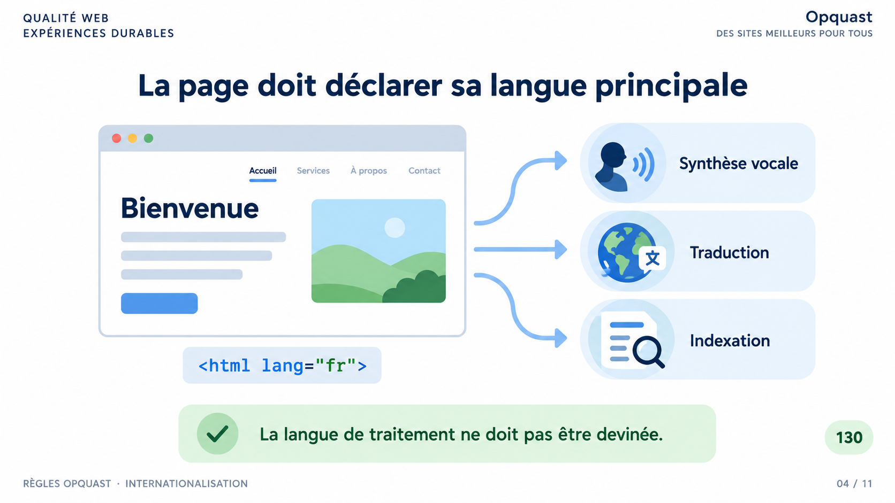
Lecture du visuel
Une page en français est reliée à trois usages automatisés :
- Synthèse vocale
- Traduction
- Indexation
Sous la page, le code affiche :
<html lang="fr">
Règle 130
« Le code source de chaque page indique la langue principale du contenu. »
Vérification
Contrôler la présence et la pertinence de l’attribut lang sur l’élément html, par exemple <html lang="fr">.
Point de vigilance Opquast
La langue de traitement déclarée avec lang ne doit pas être confondue avec la langue ou les langues du public cible.
Message à retenir
La langue de traitement ne doit pas être devinée.
Une personne reconnaît généralement qu’une page est en français. Un outil automatique ne doit pas avoir à le deviner.
La règle 130 demande donc d’indiquer la langue principale dans le code source, le plus souvent avec l’attribut lang de l’élément html.
Relier la règle à son impact
Sans cette information, une synthèse vocale peut prononcer le contenu avec de mauvaises règles phonétiques. Les outils de traduction automatique et d’indexation peuvent également interpréter moins correctement le contenu.
Ce que garantit la règle
La règle 130 favorise l’indexation selon la langue, facilite la traduction automatique et permet une lecture plus correcte par les outils de synthèse vocale. Elle contribue également à l’accessibilité des contenus.
Point de vigilance
lang="fr" indique la langue de traitement de la page. Ce n’est pas la même chose que l’indication du public linguistique cible.
Mémo oral
Une page, une langue de traitement déclarée.
Slide 5 - Dans une page, chaque changement de langue compte
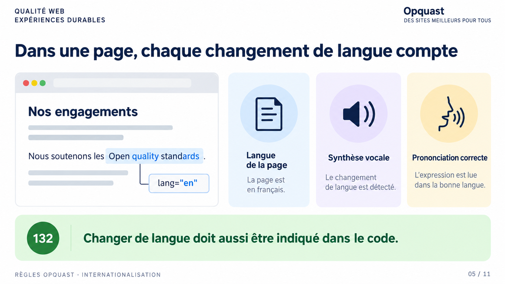
Lecture du visuel
Une page principalement rédigée en français contient l’expression anglaise :
Open quality standards
Le changement de langue est associé au repère :
lang="en"
Le visuel relie ce signalement à la synthèse vocale et à une prononciation correcte.
Règle 132
« Chaque changement de langue est signalé. »
Vérification
Repérer les contenus rédigés dans une autre langue que la langue principale et vérifier qu’un attribut lang approprié est présent ou hérité.
Nuance
La règle ne s’applique pas nécessairement aux noms propres ou à tous les mots d’origine étrangère passés dans l’usage courant. En cas de doute, la prononciation par une synthèse vocale constitue un bon critère de décision.
Message à retenir
Changer de langue doit aussi être indiqué dans le code.
Déclarer le français sur l’ensemble de la page ne suffit pas si une partie du contenu bascule en anglais, en espagnol ou dans une autre langue.
La règle 132 demande de signaler ces changements localement, par exemple avec lang="en" sur l’élément concerné.
Relier la règle à son impact
Si le changement n’est pas signalé, une aide technique peut continuer à appliquer les règles de prononciation de la langue principale. Une expression anglaise peut alors être lue comme du français. Les outils de traduction automatique peuvent aussi moins bien interpréter ces variations.
Ce que garantit la règle
La règle permet aux aides techniques d’interpréter correctement les contenus exprimés dans une autre langue et facilite le travail des outils de traduction automatique.
Mémo oral
Langue globale, exceptions locales.
Slide 6 - Annoncer la langue avant le clic
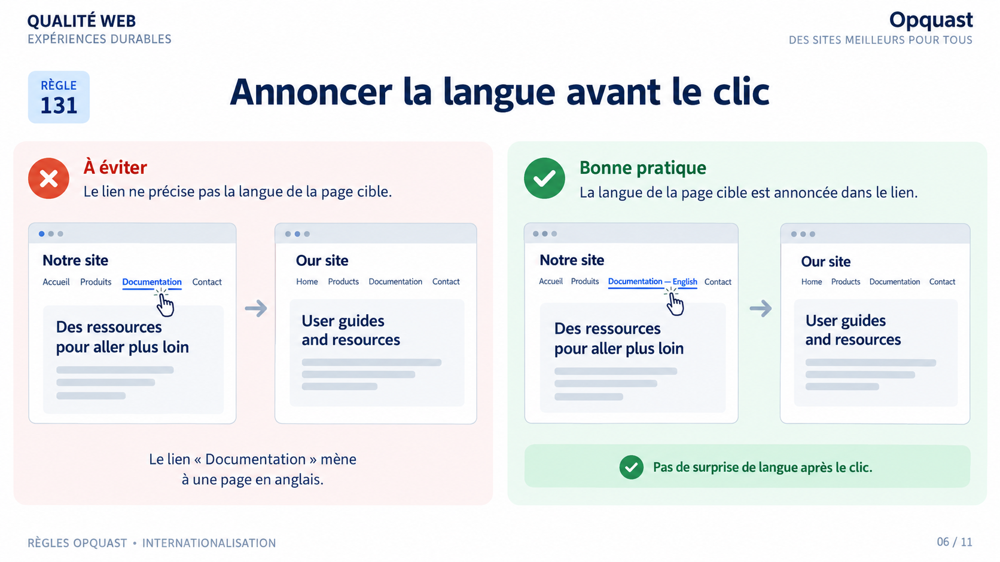
Lecture du visuel
Deux situations sont comparées.
À gauche, un lien intitulé Documentation ouvre une page anglaise sans avertissement.
À droite, le lien indique :
Documentation — English
L’utilisateur connaît donc la langue cible avant de cliquer.
Règle 131
« La langue principale de la page cible d'un lien est identifiable lorsqu'elle diffère de celle de la page d'origine. »
Vérification
Repérer les liens menant vers une page dans une autre langue et vérifier que cette langue est identifiable immédiatement : dans le libellé, le contexte ou éventuellement via une icône appropriée.
Point de vigilance Opquast
L’attribut hreflang seul ne suffit pas, car il n’est pas nativement restitué à l’utilisateur par les navigateurs.
Message à retenir
Pas de surprise de langue après le clic.
Un lien masque beaucoup d’informations jusqu’au moment où on l’active. Lorsque la page cible change de langue, cette information mérite d’être donnée avant le clic.
Relier la règle à son impact
Sans indication préalable, l’utilisateur peut ouvrir inutilement une page qu’il ne comprend pas. Il perd du temps et peut interrompre sa navigation.
Ce que garantit la règle
La règle 131 permet d’anticiper le changement de langue et évite de conduire l’utilisateur vers une page dont il ne comprend pas la langue sans l’avoir averti.
La langue peut être indiquée directement dans le libellé du lien, dans son contexte immédiat ou éventuellement par une icône. Aucun de ces moyens n’est imposé à lui seul.
Mémo oral
La langue cible se voit avant le clic.
Slide 7 - Changer de langue sans perdre la page courante
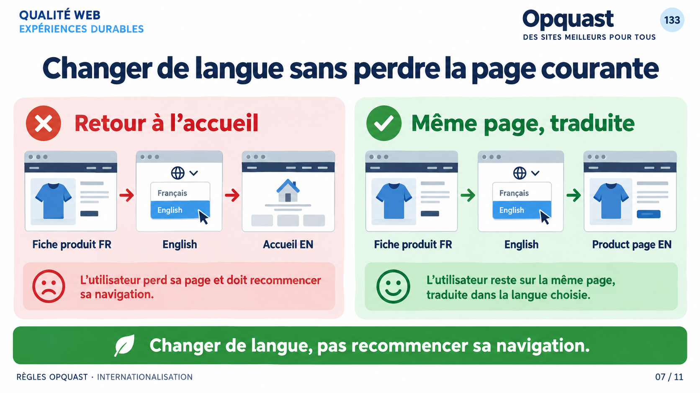
Lecture du visuel
Deux parcours sont comparés depuis une fiche produit en français.
Mauvaise pratique : le changement vers l’anglais renvoie à la page d’accueil anglaise.
Bonne pratique : le changement vers l’anglais affiche directement la traduction de la fiche produit courante.
Règle 133
« Les liens d'accès aux versions traduites pointent directement vers la traduction de la page courante. »
Vérification
Sur une page traduite, vérifier que le changement de langue conduit directement à la version traduite de cette même page, sans retour à la page d’accueil.
Message à retenir
Changer de langue, pas recommencer sa navigation.
Le sélecteur de langue ne devrait pas remettre l’utilisateur au début du site.
S’il consulte une fiche produit, un article ou une page précise et qu’une traduction existe, le changement de langue doit l’amener directement à cette version équivalente.
Relier la règle à son impact
Si le sélecteur renvoie à l’accueil, l’utilisateur perd son contexte et doit retrouver seul le contenu qu’il consultait. Sur un site complexe, cette recherche peut être longue ou même impossible.
Ce que garantit la règle
La règle 133 donne un accès direct et immédiat à la traduction de la page courante.
Elle ne demande pas simplement « un site disponible dans plusieurs langues » : elle vise la continuité exacte du parcours entre pages équivalentes.
Mémo oral
Même page, autre langue.
Slide 8 - Le lien vers une langue doit parler cette langue
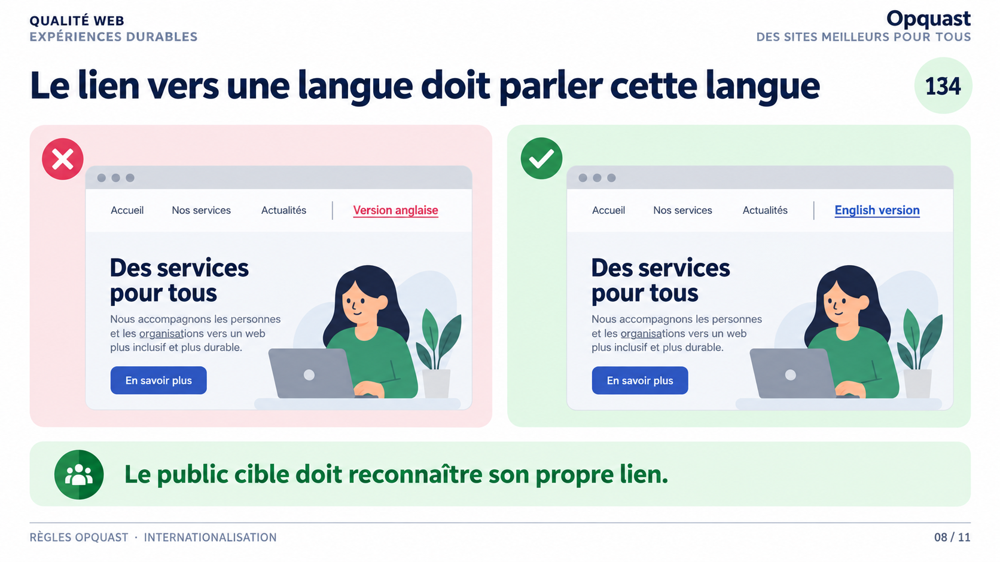
Lecture du visuel
Deux liens vers une version anglaise sont comparés.
À gauche :
Version anglaise
À droite :
English version
Le second lien est directement rédigé dans la langue de la page cible.
Règle 134
« Les liens vers les versions équivalentes des contenus sont rédigés dans leur langue cible. »
Vérification
Pour chaque lien menant vers une autre version linguistique du contenu, vérifier que son libellé est rédigé dans la langue cible.
Message à retenir
Le public cible doit reconnaître son propre lien.
Imaginons une personne qui ne comprend pas le français et cherche la version anglaise d’une page. Si le lien est écrit uniquement « Version anglaise », il lui faut déjà comprendre le français pour trouver sa langue.
La règle 134 inverse cette logique : le lien destiné au public anglophone est lui-même rédigé en anglais.
Relier la règle à son impact
Sans ce libellé dans la langue cible, l’utilisateur peut ne pas reconnaître le lien qui lui est précisément destiné.
Ce que garantit la règle
La règle permet l’identification immédiate du lien pertinent et rend compréhensibles les liens créés pour un public linguistique spécifique.
Elle concerne aussi, lorsque nécessaire, les alternatives textuelles d’images-liens menant vers ces versions.
Mémo oral
La langue cible nomme son propre lien.
Slide 9 - Servir d’abord la langue préférée de l’utilisateur
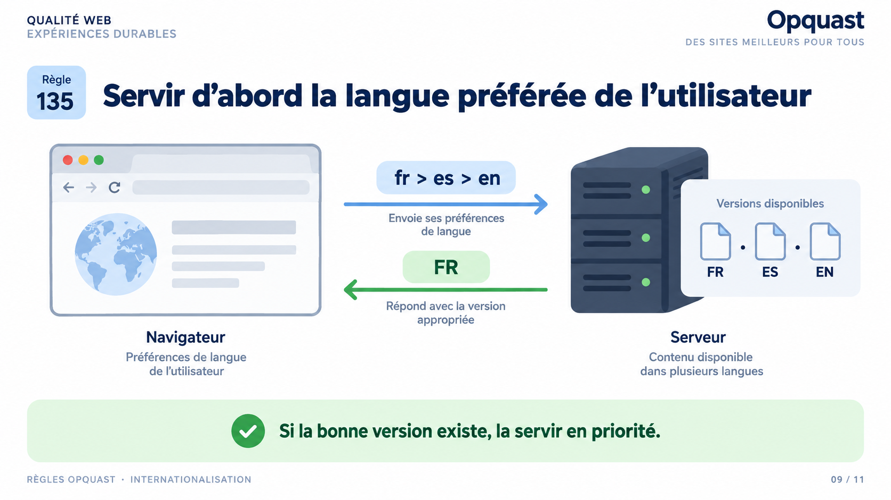
Lecture du visuel
Le navigateur envoie un ordre de préférence linguistique :
fr > es > en
Le serveur dispose de versions :
FR · ES · EN
La réponse renvoyée est la version française, première langue disponible dans l’ordre de préférence.
Règle 135
« Le serveur respecte l'ordre préférentiel de langues des outils de consultation. »
Vérification
Modifier l’ordre des langues préférées du navigateur et vérifier que le serveur renvoie prioritairement la première version disponible correspondante.
Message à retenir
Si la bonne version existe, la servir en priorité.
Le navigateur peut transmettre au serveur une liste ordonnée de langues préférées. Par exemple : français, puis espagnol, puis anglais.
La règle 135 demande au serveur de respecter cet ordre lorsque plusieurs versions du contenu sont disponibles.
Relier la règle à son impact
Si cette préférence est ignorée, l’utilisateur peut recevoir une version moins adaptée alors qu’une version correspondant mieux à son choix existe déjà.
Ce que garantit la règle
La règle vise à envoyer prioritairement la version correspondant à la première langue disponible dans l’ordre de préférence de l’utilisateur.
Elle ne garantit pas que toutes les langues existent. Elle demande de respecter l’ordre parmi les versions réellement disponibles.
Mémo oral
Préférences du navigateur → meilleure version disponible.
Slide 10 - Cas pratiques
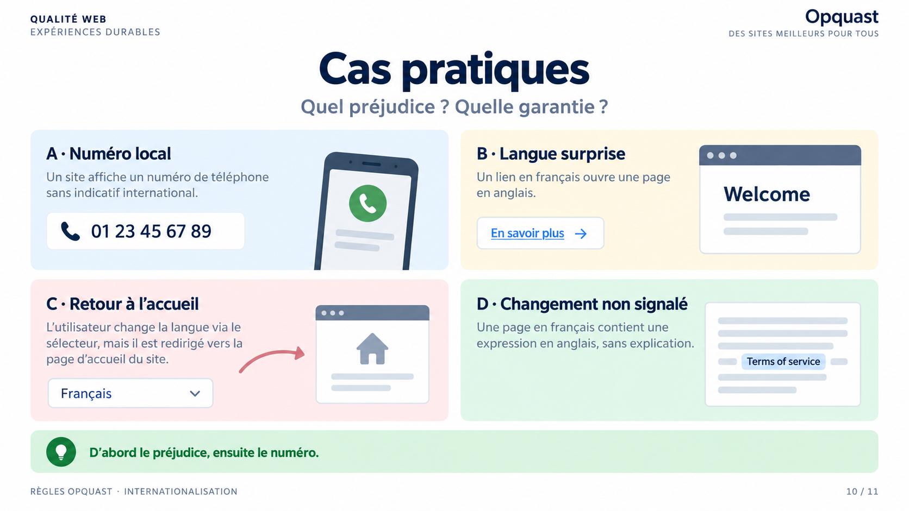
Lecture du visuel
Quatre situations sont proposées comme exercices originaux de formation :
- A · Numéro local : un numéro est affiché sans indicatif international.
- B · Langue surprise : un lien en français ouvre une page anglaise.
- C · Retour à l’accueil : changer de langue renvoie vers la page d’accueil.
- D · Changement non signalé : une expression anglaise apparaît dans une page française.
Question de relecture
Pour chaque cas :
- Quel préjudice l’utilisateur peut-il subir ?
- Que devrait garantir le service ?
- Quelle règle permet de retrouver cette exigence ?
Point de vigilance Opquast
Le cas D est visuellement résumé par une expression anglaise « sans explication ». La règle 132 ne demande pas une explication visible : elle demande que le changement de langue soit signalé dans le code, notamment avec l’attribut lang.
Message à retenir
D’abord le préjudice, ensuite le numéro.
Cette slide sert à appliquer notre méthode. Ne cherchons pas immédiatement les numéros.
Relier chaque cas à son impact
A · Numéro local : l’utilisateur situé dans un autre contexte peut ne pas savoir comment composer le numéro. On retrouve la règle 128.
B · Langue surprise : il découvre seulement après le clic que la page cible est dans une autre langue. On retrouve la règle 131.
C · Retour à l’accueil : le changement de langue lui fait perdre la page courante. On retrouve la règle 133.
D · Changement non signalé : une aide technique peut prononcer incorrectement le passage étranger si sa langue n’est pas déclarée dans le code. On retrouve la règle 132.
Ce que garantissent les règles
128 rend le contact téléphonique immédiatement utilisable.
131 permet d’anticiper la langue cible.
133 conserve le contexte de la page lors du changement de langue.
132 permet aux aides techniques et outils automatiques d’interpréter correctement le changement de langue.
Mémo oral
Situation → préjudice → garantie → règle.
Slide 11 - Une langue identifiable, un parcours prévisible
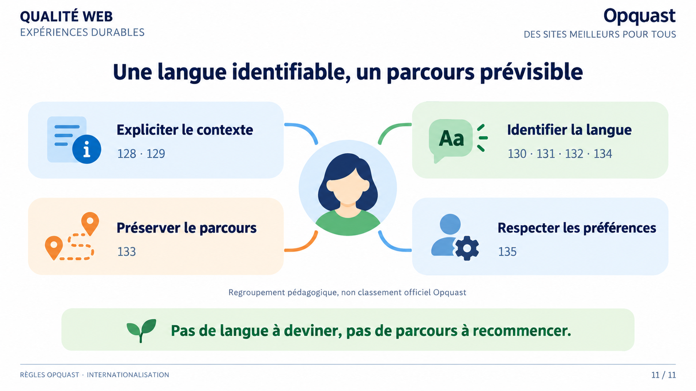
Lecture du visuel
Les huit règles de la rubrique sont regroupées pédagogiquement en quatre questions.
Expliciter le contexte
- 128 : L'indicatif international est disponible pour tous les numéros de téléphone.
- 129 : Le pays est précisé pour toutes les adresses postales.
Identifier la langue
- 130 : Le code source de chaque page indique la langue principale du contenu.
- 131 : La langue principale de la page cible d'un lien est identifiable lorsqu'elle diffère de celle de la page d'origine.
- 132 : Chaque changement de langue est signalé.
- 134 : Les liens vers les versions équivalentes des contenus sont rédigés dans leur langue cible.
Préserver le parcours
- 133 : Les liens d'accès aux versions traduites pointent directement vers la traduction de la page courante.
Respecter les préférences
- 135 : Le serveur respecte l'ordre préférentiel de langues des outils de consultation.
Note de cadrage
Ce regroupement est pédagogique et ne constitue pas un classement officiel Opquast.
Message à retenir
Pas de langue à deviner, pas de parcours à recommencer.
Pour retenir les huit règles, on peut les ramener à quatre questions simples.
Relier les règles à leur impact
Le contexte local est-il explicite ?
128 et 129 évitent de faire deviner l’indicatif d’un téléphone ou le pays d’une adresse.
La langue est-elle correctement identifiée ?
130, 131, 132 et 134 couvrent la langue principale de la page, la langue cible des liens, les changements de langue dans le contenu et le libellé des versions équivalentes.
Le changement de langue conserve-t-il mon parcours ?
133 évite le retour inutile à la page d’accueil.
Le service respecte-t-il mes préférences ?
135 utilise l’ordre de langues transmis par l’outil de consultation.
Ce que garantissent les règles
Ensemble, elles réduisent les ambiguïtés liées au contexte international, rendent les langues plus prévisibles et facilitent l’accès à la version pertinente du contenu.
Mémo oral
Expliciter. Identifier. Continuer. Respecter.
Slide 12 - L’internationalisation dépasse la rubrique
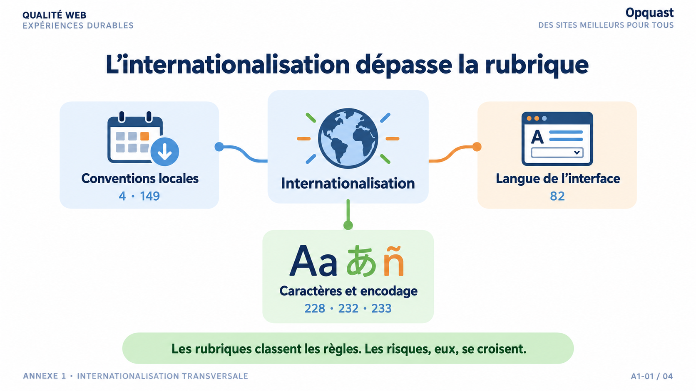
Lecture du visuel
La rubrique Internationalisation est placée au centre et reliée à trois familles de risques transversaux :
- Conventions locales : règles 4 et 149.
- Langue de l’interface : règle 82.
- Caractères et encodage : règles 228, 232 et 233.
Règles transversales représentées
- 4 : Les dates sont présentées dans des formats explicites.
- 82 : Les messages d'erreur personnalisés sont exprimés dans la langue du formulaire.
- 149 : La langue des fichiers en téléchargement est précisée lorsqu'elle diffère de celle de la page d'origine.
- 228 : Les entêtes envoyés par le serveur contiennent les informations relatives au jeu de caractères employé.
- 232 : Le code source de chaque page contient une métadonnée qui définit le jeu de caractères.
- 233 : Le codage de caractères utilisé est UTF-8.
Périmètre
Ces règles ne font pas partie de la rubrique officielle 128 à 135. Elles sont présentées ici parce qu’elles répondent directement à des risques liés au contexte international.
Autres rapprochements transversaux
Certaines règles des images et médias peuvent également contribuer à l’internationalisation :
- Règle 121 : « Chaque contenu audio et vidéo est accompagné de sa transcription textuelle. » La transcription permet notamment l’exploitation du contenu par des outils linguistiques et sa traduction.
- Règles 117 et 118 : les alternatives textuelles des images-liens et des images porteuses d’information rendent également ces informations textuelles exploitables, notamment par des outils de traduction automatique.
Ces règles ne font pas partie de la rubrique Internationalisation. Elles illustrent la transversalité du sujet.
Message à retenir
Les rubriques classent les règles. Les risques, eux, se croisent.
La rubrique Internationalisation contient huit règles, mais les difficultés liées aux langues et aux conventions internationales ne s’arrêtent pas à cette frontière.
Relier les règles à leur impact
Une date numérique peut être interprétée différemment selon le pays. Un fichier peut être téléchargé avant que l’utilisateur découvre qu’il est rédigé dans une autre langue. Un formulaire peut soudain afficher un message d’erreur dans une langue différente. Enfin, un mauvais encodage peut rendre certains caractères illisibles.
Ce que garantissent ces règles
La règle 4 réduit l’ambiguïté des dates.
La règle 149 informe sur la langue d’un téléchargement avant l’action.
La règle 82 maintient la cohérence linguistique des messages d’erreur du formulaire.
Les règles 228, 232 et 233 contribuent à un affichage fiable des caractères en définissant et en utilisant correctement le jeu de caractères.
Cette transversalité va encore plus loin : les alternatives textuelles des images et les transcriptions des contenus audio et vidéo rendent aussi certaines informations exploitables par les outils linguistiques.
Point de cadrage
Cette annexe montre des connexions transversales. Elle ne redéfinit pas le classement officiel du référentiel.
Mémo oral
Conventions, interface, caractères.
Slide 13 - Ce qui varie selon le pays doit être explicité
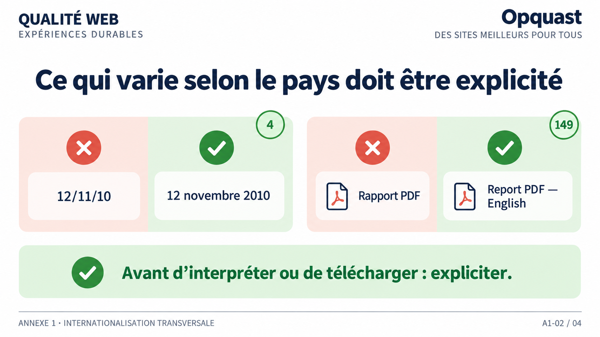
Lecture du visuel
Deux comparaisons sont présentées.
Pour la date :
- ambigu :
12/11/10 - explicite :
12 novembre 2010
Pour le téléchargement :
- ambigu :
Rapport PDF - explicite :
Report PDF — English
Règle 4
« Les dates sont présentées dans des formats explicites. »
Règle 149
« La langue des fichiers en téléchargement est précisée lorsqu'elle diffère de celle de la page d'origine. »
Vérification
Pour la règle 4 : le mois est écrit en lettres et l’année sur quatre chiffres.
Pour la règle 149 : lorsque la langue du fichier diffère de celle de la page, l’utilisateur peut connaître cette langue avant de télécharger.
Message à retenir
Avant d’interpréter ou de télécharger : expliciter.
Ces deux règles sont classées ailleurs dans le référentiel, mais elles répondent directement à des risques internationaux.
Relier chaque règle à son impact
Avec 12/11/10, un utilisateur peut comprendre 12 novembre ou 11 décembre selon ses conventions nationales.
Avec un lien Rapport PDF, il peut télécharger un fichier avant de découvrir qu’il est rédigé dans une langue qu’il ne comprend pas.
Ce que garantissent les règles
La règle 4 évite les méprises sur le sens d’une date et facilite la compréhension et la réutilisation du contenu.
La règle 149 évite les téléchargements inutiles et informe l’utilisateur sur la langue du fichier avant qu’il engage le téléchargement.
Nuance
La règle 4 ne concerne pas les dates saisies par l’utilisateur lorsqu’un datepicker est utilisé ou lorsque le format attendu est clairement indiqué.
Mémo oral
Convention ou langue : prévenir avant l’action.
Slide 14 - Même formulaire, même langue
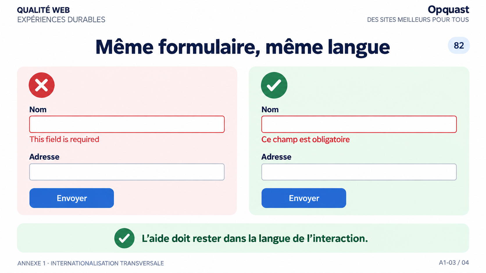
Lecture du visuel
Deux formulaires français sont comparés.
À gauche, le message d’erreur apparaît en anglais :
This field is required
À droite, le message est exprimé dans la langue du formulaire :
Ce champ est obligatoire
Règle 82
« Les messages d'erreur personnalisés sont exprimés dans la langue du formulaire. »
Vérification
Déclencher les erreurs du formulaire et vérifier que les messages personnalisés sont exprimés dans la même langue que les libellés et étiquettes du formulaire.
Message à retenir
L’aide doit rester dans la langue de l’interaction.
Une interface peut sembler correctement traduite jusqu’au moment où une erreur apparaît. Or c’est précisément à ce moment que l’utilisateur a besoin d’une information compréhensible.
Relier la règle à son impact
Si le formulaire est en français mais que le message d’erreur personnalisé s’affiche en anglais, l’utilisateur peut ne pas comprendre ce qu’il doit corriger. Cela crée une difficulté de saisie et une rupture brutale dans l’expérience.
Ce que garantit la règle
La règle 82 maintient les messages d’erreur personnalisés dans la même langue que le formulaire. Elle vise à prévenir les difficultés de saisie, améliorer la compréhension des erreurs et contribuer à l’accessibilité.
Point de vigilance
La règle porte spécifiquement sur les messages d’erreur personnalisés. Les bibliothèques et systèmes de validation doivent donc être effectivement configurés et testés dans les langues du service.
Mémo oral
Même formulaire, même langue.
Slide 15 - Serveur, page et contenu doivent parler le même encodage
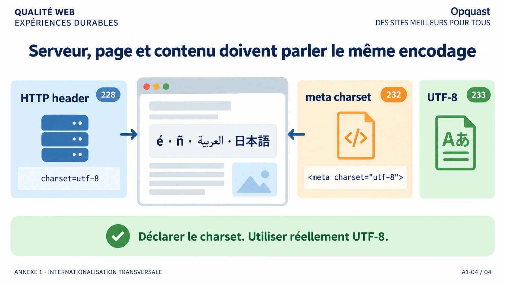
Lecture du visuel
La slide représente trois niveaux techniques autour d’une page affichant plusieurs écritures :
- HTTP header :
charset=utf-8 - meta charset :
<meta charset="utf-8"> - UTF-8 : codage réel du contenu
Règle 228
« Les entêtes envoyés par le serveur contiennent les informations relatives au jeu de caractères employé. »
Règle 232
« Le code source de chaque page contient une métadonnée qui définit le jeu de caractères. »
Règle 233
« Le codage de caractères utilisé est UTF-8. »
Vérification
- 228 : le
charsetest présent dans l’en-tête HTTPContent-Typeet correspond au document. - 232 : le code source contient une métadonnée de charset pertinente.
- 233 : le contenu est effectivement encodé en UTF-8, sans caractères inattendus ou erronés.
Message à retenir
Déclarer le charset. Utiliser réellement UTF-8.
Une page peut être parfaitement traduite sur le plan éditorial et pourtant devenir illisible si le navigateur ne sait pas comment interpréter ses caractères.
Cette slide distingue trois niveaux qu’il ne faut pas confondre.
Relier chaque règle à son impact
Avec la règle 228, l’absence ou l’erreur de charset dans l’en-tête HTTP peut conduire le navigateur à choisir un mauvais encodage.
Avec la règle 232, une page consultée hors ligne ou sans information HTTP fiable peut rencontrer les mêmes problèmes si sa métadonnée est absente ou incorrecte.
Avec la règle 233, le contenu lui-même doit réellement être en UTF-8 : une simple déclaration ne suffit pas si l’encodage effectif est différent.
Ce que garantissent les règles
228 permet au navigateur de choisir le bon jeu de caractères.
232 fournit cette information dans le document et joue notamment un rôle lorsque l’en-tête HTTP manque ou lors d’une consultation hors ligne.
233 impose UTF-8, un codage international qui prévient de nombreux défauts d’affichage et facilite la manipulation des contenus.
Point technique à retenir
L’en-tête HTTP est prioritaire sur la métadonnée HTML. Les déclarations doivent correspondre à l’encodage réellement utilisé.
Mémo oral
Annoncer. Déclarer. Encoder.